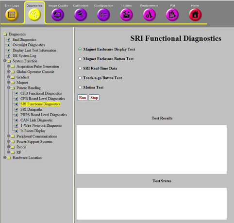

Operating Documentation
Direction 5670006, Rev# 1
Discovery MR750w GEM Service Methods
Module Version 6.0, Version Date 10/12/11
Operating Documentation |
Diagnostics >> System Function >> Patient Handling >> SRI Functional Diagnostics
Diagnostics >> Hardware Location >> Magnet Room >> SRI Functional Diagnostics
Illustration 1: SRI Real-Time Data

The purpose of this diagnostic is to display the current state of the SRI’s sensors, ADCs, encoders, motor controller data, and cable detects.
The diagnostic will display the current motor and position encoder counts. The value can be positive or negative and the zero location will be the location of the LPCA when the last SRI reset was performed. The position and motor encoder data can be used to determine if the encoder values are changing. For example, if the cradle won’t move with push buttons moving the cradle by hand should cause the position encoder value to change. Also, motion requests, even when faulted, will likely have motor encoder count changes. If the move is failing and the motor encoder isn’t changing then motor encoder may be faulty or the gearbox may be bound. (Assuming power levels are appropriate to the motor.)
The current motor controller feedback data will also be displayed: Motor amplifier temperature, high voltage reference, and winding current.
The diagnostic will display all of the currently disconnected cables. The following cables have cable detect logic:
Position encoder
Motor encoder
Table interface box
Longitudinal drive cable at the SRI
Longitudinal drive cable at the PHPS
MCPDB cable
Touch and go strip (only expected to be present for tables with touch and go)
Gradient coil temperature
Bore/scan room temperature
Airflow sensor
Bore light
Patient alignment light
Dock power cable at the PHPS
Dock cable at the SRI
Home/End of Travel/Cradle attached switches
Motor commutation feedback cable
In some cases there are multiple cable detect signal lines in the same physical connection at the SRI. For example, when the table interface box is disconnected it is expected that the motor and position encoders not be detected.
This diagnostic will also display the current cradle/dock related information: table up/down, table docked/not docked, and cradle at home or not.
The temperature and sensor values are also displayed (along with fault information):
Maximum gradient coil temperature (the highest value of the four gradient coil temperature sensors).
Average gradient coil temperature (the average value of the four gradient coil temperature sensors).
The delta temperature across the four gradient coil Inner-Bore Coolant (IBC) temperature sensors (maximum value - minimum value).
Bore temperature
Scan room ambient air temperature
The delta airflow from the airflow sensors (difference between the 2 airflow sensors).
The final piece of information displayed by the real-time diagnostic is the raw Analog to Digital Converter (ADC) values for the ADCs on the SRI.
SRI
Bore and scan room air temperature sensor
Gradient coil temperature sensors
Airflow sensors
Motor controller interface
Cable connections: position encoder, motor encoder, table interface box, longitudinal drive cable at the SRI, longitudinal drive cable at the PHPS, PHPS to SRI cable, gradient coil temperature, airflow sensor, bore/scan room temperature, bore light, alignment light, dock power cable, dock cable, home/end of travel/cradle attached switch, and motor commutation feedback
This diagnostic is available from the Common Service Desktop when required system components are available. A complete system is required. No special hardware or configurations are necessary.
Refer to the Interactive Block Diagrams.
Select SRI Real-Time Data from the SRI Functional Diagnostics screen.
Click [Run].
Review the Test Results to see real-time output or to see the pass/fail status of any diagnostics.
Real-time output values are displayed for comparison. Diagnostic output values are judged pass or fail. Review the error log and corresponding extended error messages for subsequent actions for diagnostic failures.